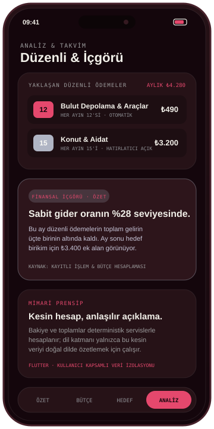

EKRAN 01 · ÖZET
Nakit akışı & son hareketler
Aylık net durum, gelir/gider dengesi, haftalık ritim ve son işlemler tek bakışta.

Gelir, gider, bütçe, birikim, hedef ve düzenli ödemeleri tek bir kişisel çalışma alanında birleştiren yeni nesil mobil finans uygulaması. Flutter ile geliştiriliyor; şu anda kapalı özel test aşamasında.

Dağınık banka bildirimleri, unutulan abonelikler ve ay sonunda nereye gittiği belirsiz harcamalar. CepLog; günlük işlem kaydını bütçe sınırları, birikim hedefleri ve düzenli ödeme takvimiyle aynı bağlamda buluşturur.
Aşağıdaki ekranlar CepLog’un özel test sürümündeki bilgi mimarisini örnek verilerle gösterir.
Aylık net durum, gelir/gider dengesi, haftalık ritim ve son işlemler tek bakışta.
Kategori bazlı harcama limitleri, kalan tutar uyarıları ve hedef odaklı birikim kutuları.

Tekrarlanan giderlerin aylık yükü ve deterministik hesaplamaya dayalı net finansal özetler.
Görsellerdeki rakamlar ve işlem kayıtları tanıtım amacıyla oluşturulmuş örnek verilerdir.
CepLog’un çekirdek modülleri, günlük kullanımı yavaşlatmadan net finansal görünürlük sağlamak üzere tasarlandı.
Günlük hareketleri saniyeler içinde kaydetme, satıcı/kategori eşleştirmesi ve geçmiş dönem karşılaştırmaları.
Kategori bazlı aylık harcama sınırları ve acil durum fonu ya da ekipman gibi somut hedefler için ilerleme takibi.
Fatura, kira ve abonelik gibi tekrarlanan yükümlülüklerin yaklaşan ödeme takvimi ve sabit gider oranı analizi.
Bakiye ve toplamlar deterministik servislerle hesaplanır; üzerinde geliştirilen yapay zekâ katmanı sayı üretmez, yalnızca bu kesin veriyi doğal dilde açıklar.
Ürün aktif geliştirme ve kapalı test sürecindedir. Genel mağaza açılış tarihi henüz ilan edilmemiştir.
Kimlik doğrulama, kullanıcı kapsamlı veri izolasyonu, işlem/bütçe/birikim/düzenli ödeme modülleri ve nakit akış analitiği.
Dönemsel harcama sapmaları, sabit/değişken gider dengesi ve dışa aktarılabilir aylık özet raporları.
Deterministik finansal gerçekleri doğal dilde sorgulama ve kişiselleştirilmiş açıklama asistanı.
Kapalı test grubuna katılmak, ürün hakkında geri bildirim paylaşmak veya benzer bir mobil ürün fikrini konuşmak için bize yazabilirsin.